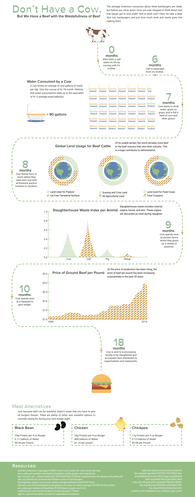
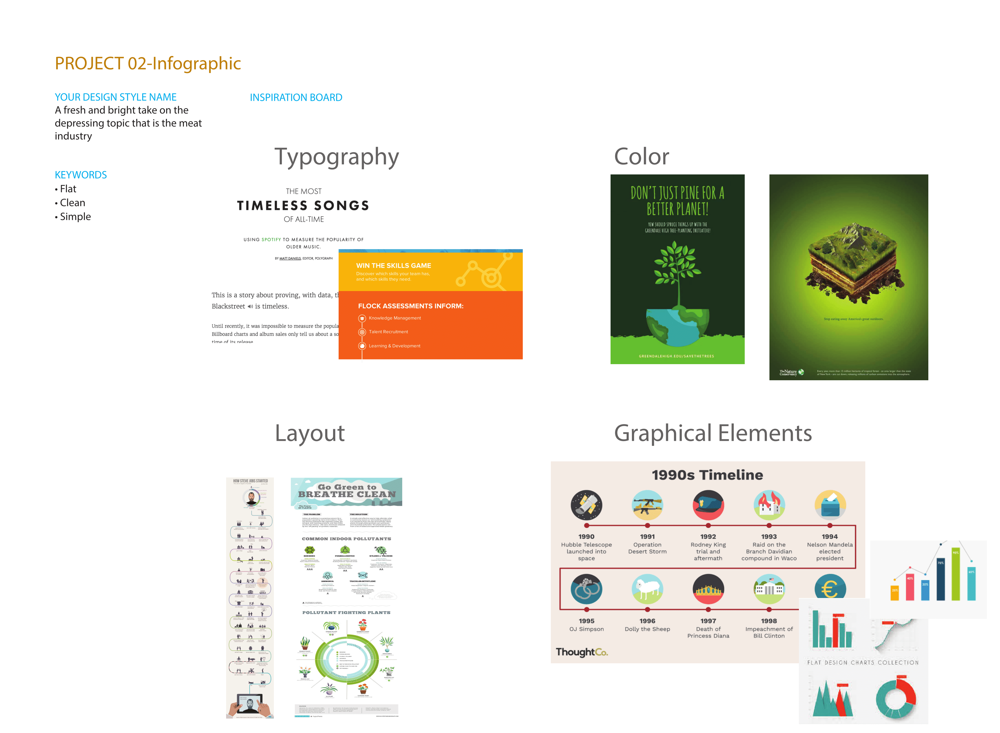
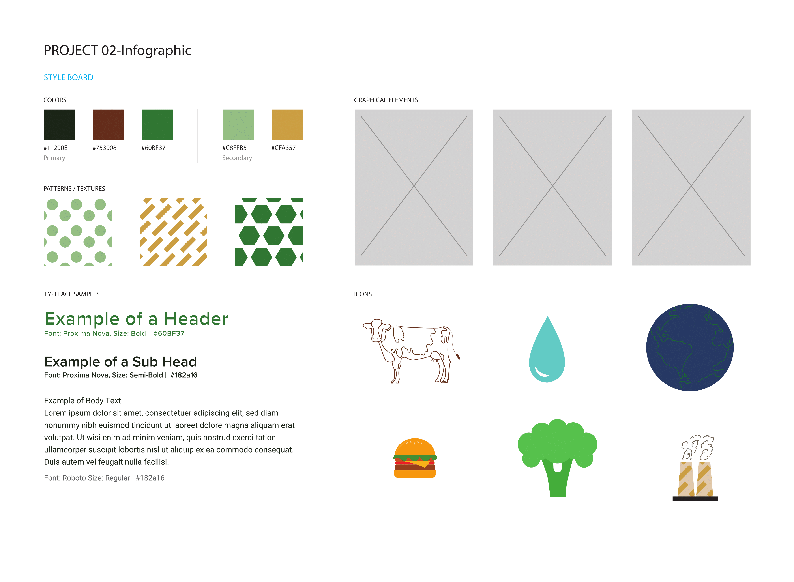
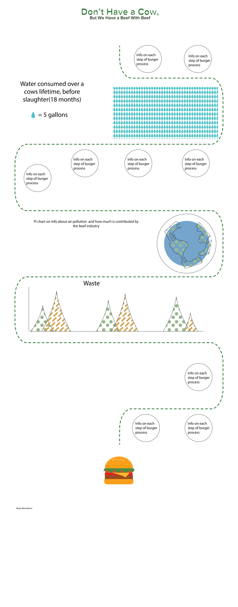

An infographic that visualizes the environmental and resource cost of beef and burger production—from water usage to land requirements and emissions. Created in Adobe Illustrator in the fall of 2018 for New Media Design Elements.
Transformed dense data into an engaging, easy-to-scan visual narrative. Designed custom icons, charts, and a clear visual hierarchy so readers can quickly grasp the scale of impact. Balanced factual accuracy with accessible, eye-catching design.



